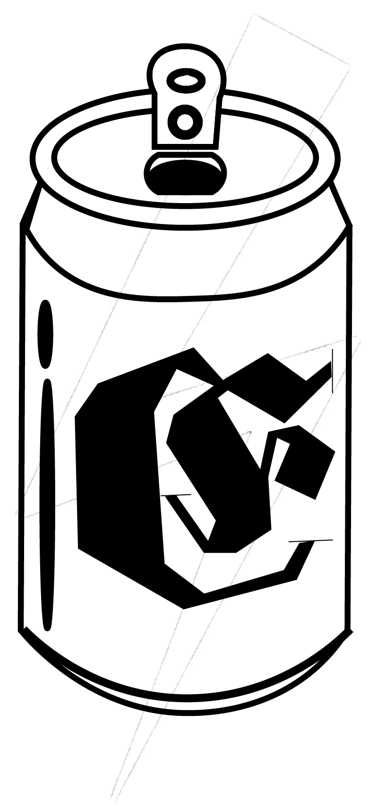
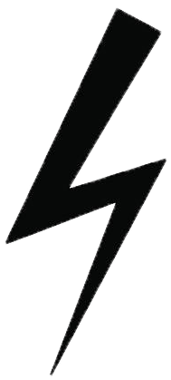

<div class="footer-background">
  <div class="footer-container">
    <mat-toolbar class="toolbar-footer">
      <span class="label-footer">
      <a routerLink="/home" routerLinkActive="active">
        
      </a>
      </span>

      <span class="made-by">
        <p class="p1">© Electro 2020 | Made with </p>
        
        <p class="p2"> by Yerinia & Elena</p>
    </span>
    </mat-toolbar>
  </div>
</div>
